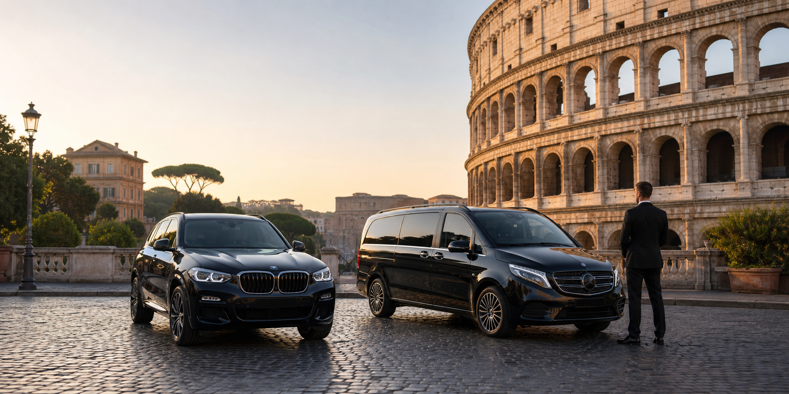
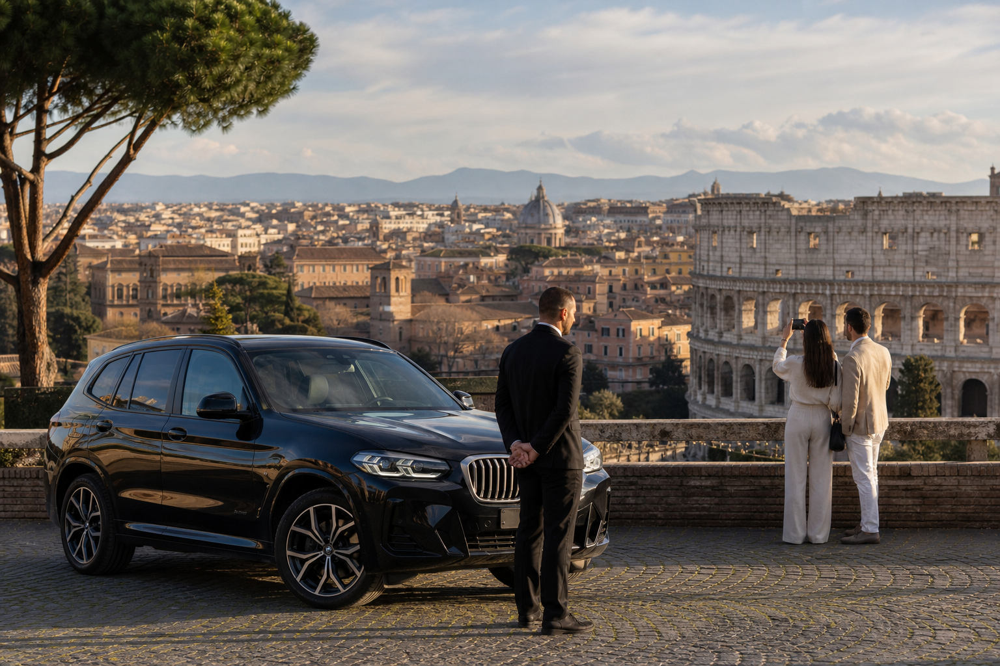
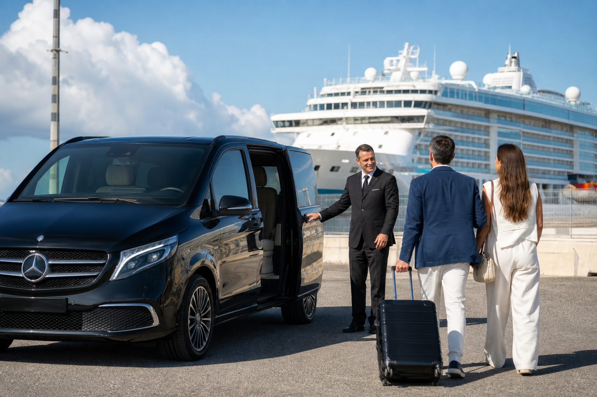
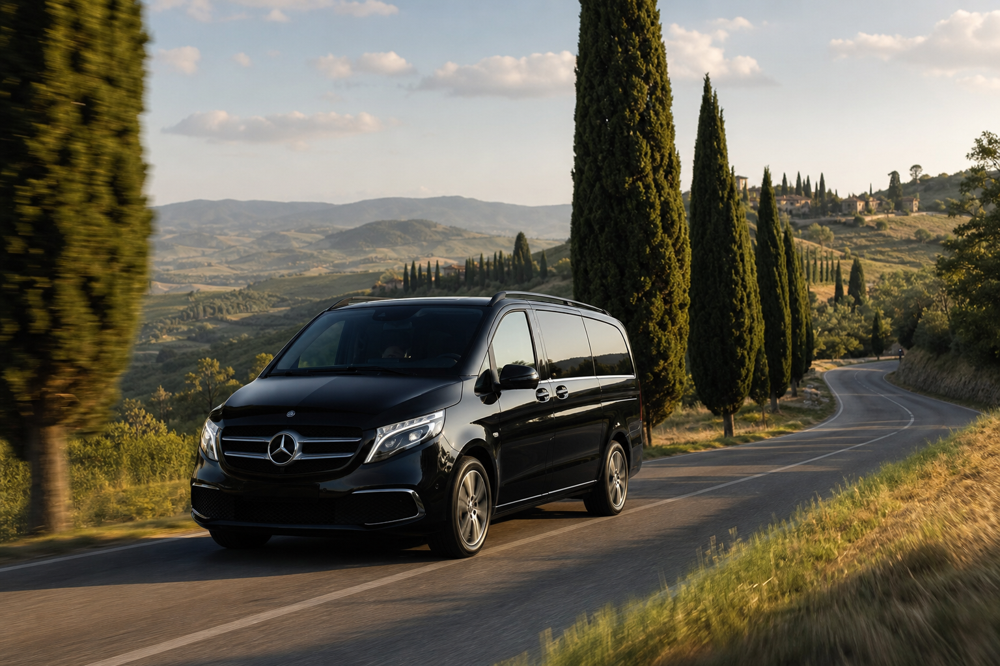

“Excellent punctual service, clean vehicle and clear WhatsApp communication.”
★★★★★
NCC in Rome
Private Transfers in Rome
Fixed Prices • Professional Chauffeur Service • WhatsApp Booking
Fixed Prices
No Hidden Fees
Flight Monitoring
English Speaking Driver
Pay Directly to the Driver

Rome Panoramic Tour
3 Hours • Rome Highlights
From €200Airport Transfers
Fiumicino & Ciampino
From €65
Cruise Port Transfers
Civitavecchia Port
From €160Hourly Chauffeur Service
Flexible private driver
€50/hour
City to City Transfers
Across Italy
Request a QuoteBook in under 60 seconds
Fast Booking
Select your service, vehicle and details. Your complete booking request opens directly in WhatsApp or by email.
★★★★★
Premium Reviews
Top-rated private chauffeur service for Rome arrivals, cruise transfers and private tours.
“Professional driver, smooth airport transfer and a premium experience from start to finish.”
★★★★★Rome Panoramic Tour
A 3-hour panoramic chauffeur tour designed to enjoy Rome’s most iconic views in total comfort, with time for elegant photo stops.
- Colosseum
- Trevi Fountain
- Spanish Steps
- Circus Maximus
- Pantheon
- Gianicolo Hill
Airport Transfers
Private transfers from Fiumicino and Ciampino with flight monitoring, meet and greet, fixed pricing and direct WhatsApp coordination.
- Flight monitoring
- Meet & Greet
- Fixed pricing
Cruise Port Transfers
Comfortable transfers between Rome, airports and Civitavecchia Cruise Port, planned around boarding and disembarkation times.
- Port to Rome
- Airport connections
- Luggage assistance
Hourly Chauffeur Service
A private chauffeur available for shopping, meetings, events, restaurants and multiple stops across Rome.
- 3+ hours
- Multiple stops
- Flexible schedule
City to City Transfers
Private transfers across Italy, including Rome to Florence, Naples, Positano and the Amalfi Coast.
- Rome → Florence
- Rome → Naples
- Rome → Amalfi Coast
FAQ
Frequently Asked Questions
Clear answers before booking your LuxWay private chauffeur service in Rome.
How do I book a transfer?
Select the service, vehicle and travel details. The complete request opens directly on WhatsApp, where we confirm availability and final details.
Are prices fixed?
Airport, port and Rome panoramic tour prices are fixed for the selected vehicle. City-to-city transfers are quoted by WhatsApp.
What is included in the 3-hour panoramic tour?
The tour includes a private chauffeur and the main checkpoints: Colosseum, Trevi Fountain, Spanish Steps, Circus Maximus, Pantheon and Gianicolo Hill.
Can I pay the driver directly?
Yes. You can pay directly to the driver, and the booking details are confirmed in advance through WhatsApp.
Why choose LuxWay instead of another company?
LuxWay combines fixed prices, licensed NCC drivers, clean premium vehicles, punctual service, flight monitoring and direct WhatsApp or email coordination. You speak with the team before the ride, so every detail is clear before pickup.